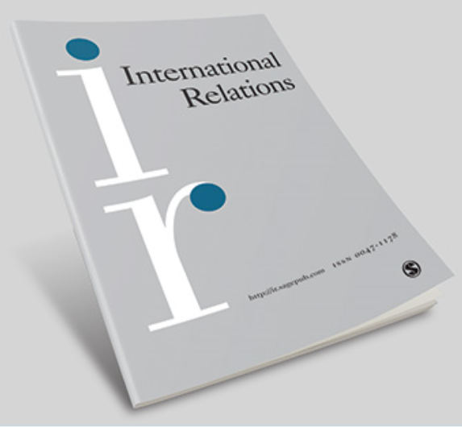

收录于合集 #理论研究 96个

作品简介
【作者】 Aaron McKeil伦敦政治经济学院国际战略与外交项目的课程导师，研究方向主要为国际关系理论、国际秩序。
【编译】 张晋岚（国政学人编译员，中国社科院大学世界经济与政治研究系博士生）
【校对】 李 源
【审核】 徐垚晟
【排版】 杨 洋
【来源】 McKeil, Aaron. " On the concept of international disorder." International Relations 34.2 (2020): 1-19. https://doi.org/10.1177/0047117820922289

**期刊介绍
**
 《国际关系》（International Relations）是国际关系领域的权威期刊之一。该期刊创刊于1960年，目前由SAGE出版社与大卫·戴维斯纪念研究所（David Davies Memorial Institute）联合发行。根据Journal Citation Reports的数据, 该期刊过去两年影响因子（2 year impact factor）为1.385，在91种国际关系类期刊中排名第43。
**** 论国际无序
On the Concept of International Disorder
Aaron McKeil
**内容提要
**
本文旨在阐明并推进关于国际无序概念的讨论。同时，作者试图发展出一个更为清晰和精确的国际无序概念。首先，这一概念全面地展现了一幅井然有序的国际秩序图景。其次，更明晰地厘清世界政治中有序与无序的关系，这有助于加深对国际秩序问题的理解。本文论述结构如下：第一，提出国际无序的分析性定义（analytical definition）。第二，作者将这一概念置于国际秩序的近代史中，探讨国际体系中有序（order）与无序（disorder）之间的生成性关系（generative relationship）。第三，阐明当今国际事务中不断恶化的国际无序态势，并思考重新排序（reordering）所产生的影响。最后，作者提出了一个更加重视国际无序作用的国际关系和国际秩序的研究议程。
**文章导读
**
01
国际无序的概念
国际无序在现代话语中的传统用法是指国际秩序（international order）的二元对立概念，即国际秩序的破坏（disruption）或缺失（deficiency）。这意味着，国际无序通常被理解为具有与国际秩序概念相对立的特性。至少有六个特性是可以确定的：第一，国际不稳定性（international instability），即国际事务易受暴力行为变化影响，其典型特征是报复行动的增加、军事态势的升级，以及革命性不满情绪的蔓延。第二，国际不确定性与不可预测性（international uncertainty or unpredictability）。这意味着对规则是什么以及行为者应采取何种行动的困惑，在此情况下，政治家对国家间外交关系的真实定位存在模糊认知。同时，当朋友和敌人的界限变得模糊时，差别（distinctions）、恐惧（fear）与怀疑（distrust）便会大量存在。第三，国际犯罪（international criminality），即公开或秘密地无视国际法的行为。第四，国际政治的分歧或争论（international political discord or controversy）。例如在国际问题上出现的激烈纷争，特别是在意识形态层面上关于基本国际准则的分歧。第五，国际功能紊乱（international dysfunction），即国际规则、规范与权威的功能失效。第六，国际冲突与暴力（international conflict and violence），意味着利益的冲突（真实的或想象的），引发公开的敌对行为，最终导致战争。现实主义国际思想的传统观点认为，上述要点是国际事务的正常属性。从现实主义的观点出发，这是一个几乎不存在秩序的社会生活。国际领域被普遍地且合理地描述为现代世界中特别杂乱无序的部分。这些关于国际无序的认知与印象（特别是现实主义者对这一概念的理解）是等级制概念的衍生，即把国际（the international）看作是一个缺乏秩序维持者的无政府国家体系。无政府被认为是无序的同义词。然而，“秩序”是有争议的，因为秩序的概念是相对于赋予它的价值而言。国际无序不能等同于国际不公正（international injustice）。现今国际秩序的价值观属于现代价值观，其最典型的特性是其进步性（progressive character）。因此，无序通常被认为是阻碍进步的力量或障碍。关于国际无序的竞争性概念之间的争论涵盖了规范层面与理论层面，不同的理论对国际无序的根源持有不同的解释。例如现实主义理论认为，国际无序是由于在无政府状态下未能成功实现权力转移。另一方面，自由主义理论认为，国际无序是由于国际组织与跨国合作的缺失。每种理论观点都倾向于将无序与其来源的理论划等号。因此，国际秩序的理论概念源于国际关系理论的解释。然而，一个更重要的目标的是阐明国际无序的分析性概念（analytical conception）。这个概念适用于分析国际无序的产生，但未必能对其理论解释做出假定。为此目的，有必要区分国际无序概念表述的不同意义。首先，国际无序常被用来指在大国战争背景下，国际秩序的崩溃或缺失，国际秩序几乎完全被摧毁。第二，国际无序被用来指不负责任的外交政策的行为，这一行为破坏秩序、与秩序相抵触并造成不稳定和不可预测性。同时，这一行为也可能会导致不计后果的非法战争或为私利而违反国际条约的行为。第三，国际无序概念也常被赋予评价性意义，即指国际秩序的愿景与现实之间、人们期望国际秩序实现的目标与现实世界的局限性之间的错位。基于此，我们可以区分出国际无序概念的三个涵义：第一，秩序规则与制度的缺失或遭受破坏；第二，国家无视和破坏秩序的行为；第三，具有缺陷或功能失调的秩序。从某种意义而言， 这些关于无序概念的思考都把其视为一种秩序的缺失或一种违反秩序的行为。 那么，是否存在一个更具实质性的概念？在讨论布尔(Hedley Bull)的无序与国际秩序概念的基础上，作者认为，为了提炼和辨别出国际无序更精准的定义，尝试从国际秩序的分析性定义推导出这一概念是有益的。在分析性定义中，存在强调行为模式和强调制度规则与规范的不同内容。为了综合这两方面的特征， 我们可以从分析性视角提出，国际秩序是一种为国际关系提供一定程度的稳定性和可预测性的行为模式、规则和规范。 这一定义表明了秩序既是一种态势，也是一种特性或条件。在实践中，国际秩序往往自发地或由人为设计的制度产生秩序的特性，在不同时期具有不同程度的成功。根据这一定义，当不同的预期行为模式、规则和规范适用于不同关系时，就存在着多种不同的国际秩序。 当预期的行为模式、规则和规范发生变化时，秩序就会发生变化。秩序的变化是指主要的有序性行为预期、规则和规范发生变化（特别是发生在主要战争之后）。然而，当单位本身发生变化时（比如现代系统从中世纪系统中孕育而出），系统将发生更为根本性转化。 在此基础上，为了提出国际无序的分析性概念，我们可以把国际无序视为对有序性行为、规则和规范的破坏，并在国际事务中造成不稳定与不可预测的情况。 这一分析性定义结合了国际无序的不同含义（包括破坏或违反国际秩序的行为）与这些含义所产生的共同的影响（不稳定和不可预测的性质）。结合这些因素及其影响是重要的，这是因为有序性行为、规则与规范遭受破坏的过程实际上会产生一个稳定和可预测的重新排序过程，从而在国际事务中产生更高的稳定性与可预测性。因此，当秩序的崩溃同不稳定性和不可预测性因素相结合时，国际无序便会产生。此外，作者指出，如果将稳定性与可预测性视为国际秩序的主要目的或职能之一，那么这种分析性定义在一定程度上仍是规范性的。
02
历史中的国际无序：
1919,1945与1989-1991
作者认为，国际无序的概念是为了防止彻底失序的态势而提出的，关于需要防止哪些无序状态以及需要哪些秩序制度的认知是由历史上特定无序状态下的历史经验所塑造。有关历史经验表明，破坏国际秩序的行为与事件产生了旨在防止这些破坏行为发生的新型实践方式与制度。回顾两次世界大战之间的国际秩序、冷战时期的国际秩序和冷战后的国际秩序，有助于阐明国际无序的作用，同时也为厘清当今国际关系中日益加重的国际无序提供了必要的历史背景。选择这些案例的优点在于，三个案例发生序列的连续性有助于对国际秩序和无序的生成动力（generative dynamics）进行历时性分析（diachronic analysis）。
（一）1919年与两次世界大战间的秩序
第一次世界大战对后来两次世界大战之间的秩序形成有何影响？在第一次世界大战中所表现出的强大冲击性的无序形势产生了新型国际制度，其规模是前所未有的。或许最重要的影响是通过国际联盟（League
of
Nations）的建立推动单位行为模式转向集体安全与公开外交，其目的是防止两个被认为是战争爆发的关键根源再次产生：误判（miscalculation）和均势体系（balance
of power system）。
1919年之后，两次世界大战之间的秩序被进一步巩固在另外两个条约中：《华盛顿公约》（1921-1922）与《洛迦诺公约》（1925）。然而，1928年达成的《凯洛格- 白里安公约》被视为战后一项重要的重新排序措施，它规定禁止签署国以战争作为推行国家政策的手段。尽管这一公约宣布禁止发动战争，但是却未提出相应的制度来消除战争的根源，因此这一公约收效甚微。这导致了非意图性后果：使联盟维持和执行和平的能力瘫痪。如果交战国企图发动战争，那么联盟的调解和仲裁等机制在防止战争方面是无效的。
此外，尽管这一重新排序措施的效果是有限的，但也促进了一个涵盖少数群体权利的秩序的发展。
（二）1945年与冷战秩序
无论两次世界大战之间秩序的消亡是否不可避免，都再次产生了关于无序产生的根源以及防止无序产生的手段的认知。战后秩序的结盟计划产生于1941年的《大西洋宪章》，随后召开的一系列盟军会议为《联合国宪章》和战后国际秩序奠定了基础。联合国安理会（UN Security Council）是一项重大的制度调整措施，其目的是通过设立大国管理的常设理事会，防止背离和平的行为发生。
国际货币基金组织(International Monetary Fund)是二战后国际秩序的另一个重要机构，其设计的初衷是为了防止类似先前可预期的无序产生。布雷顿森林会议为国际货币基金组织的建立奠定了基础，这一制度旨在通过管理成员的货币汇率，并在必要时向成员国提供财政支持，以维护开放的市场。国际复兴开发银行（International Bank for Reconstruction and Development）以及《关税和贸易总协定》（General Agreement on Tariffs and Trade）在战后的国际经济秩序中补充了国际货币基金组织的作用，但二者主要偏向于一种平台型机构，旨在恢复和开放市场。国际货币基金组织发挥着防止市场崩溃与关闭的保障机制作用。战后经济秩序在发展中也面临着新的挑战与变化，特别是在尼克松政府放弃金本位制（the gold standard）时期，但是这一秩序本质上仍是由两次世界大战期间的经济失调所塑造而成。
冷战期间的两极秩序将共同制度的范围限制在最低水平。作者以冷战时期的核秩序（nuclear order）为例。20世纪60年代和70年代出现的核秩序包含两项预防性措施：不扩散和威慑。《不扩散核武器条约》禁止共享核武器，承诺有核国家进行核裁军，并确认各国享有和平利用核能的权利。然而，威慑的逻辑并不适用于裁军，因为它要求核大国保持具有毁灭性的二次打击能力的核武库。核秩序的实现要求进行军备控制，这一措施效果有限且存在不确定性，因为军备控制容易受到新技术、新参与者与定期的军备竞赛的影响。最后，去殖民化（decolonization）出现的部分原因在于战争。虽然，第二次世界大战在全球范围内削弱了欧洲的力量，但正是世界上大多数人经历了殖民主义带来的无序与混乱，才防止了这一制度的延续与重现。殖民主义的无序形势深刻地影响了战后国际秩序的特点，即主权的全球化，它意味着防止殖民主义的产生。
（三）1989-1991年与后冷战时期秩序苏联解体标志着两极秩序的结束，建立新型世界秩序与实现持久和平的愿景随之产生。联合国被赋予这一新的使命，同时世界贸易组织的扩大、亚太经济合作组织的创立与北美自由贸易协定的达成意在追求一个全球化的市场，促进民主与人权也重新纳入全球议程。在这一时期，巩固美国的主导地位是为了防止大国竞争所带来的动荡与分裂形势。然而，冷战后的秩序未能防止迅速出现的新无序形势。例如，第一次海湾战争、“9·11”恐怖袭击事件与2003年的伊拉克战争。美国在伊拉克战争中的单边主义行为破坏了冷战后的秩序，削弱了美国领导力的可预测性，加剧了国际形势的动荡。
（四）新时期的国际无序 人们对现今国际无序的兴趣愈发浓厚，这主要是由于特朗普当选美国总统及其政府对冷战后国际秩序的蓄意破坏。那么，国际无序的精确概念能否清楚地说明这一点呢？
首先，国际无序的分析性定义有助于明确和厘清当今国际事务中出现的无序范畴。特朗普政府的频繁“退约”以及特朗普本人的言论在外交上疏远了美国的盟友，这些行为增加了国际事务中不确定性与不可预测性因素。这种无序不是由冷战后美国主导的国际秩序所导致的，而是美国显著的相对实力优势及其在秩序制度中的核心作用，这使其无序行为在破坏秩序的同时却不受其它力量所制约。尽管特朗普政府曾威胁要退出北约和世贸组织等重要机构，但实际上仍未退出，因此，现今无序的程度还不足以推翻冷战后的秩序。然而，特朗普政府的无序行为破坏并挑战了美国所支持的冷战后国际秩序，并质疑了这一秩序的可行性。
其次，对无序概念的关注及其与秩序的关系提出了一个重要的问题，即当代无序的态势可能会产生何种重新排序的动力？有趣的是，加拿大、澳大利亚和德国等许多中等强国一直试图维护冷战后的“基于规则的秩序”，尽管这些国家也要求对秩序进行一些改革。这些国家似乎希望维持现存秩序，直到美国重拾原先预测性更高、合作性更强的外交政策。但是，如果这种无序态势持续并恶化，那么重新排序的动力可能会越强。 作者认为，新的国际制度可能具有三种主要形式： 1）放弃当前以美国为中心的国际制度，支持新型区域与全球安全和经济制度，以消除对美国霸权的依赖。2）在新型区域与全球制度中复制以美国为中心的国际制度模式，以在偏离正道的霸权时代拥有可依赖的制度保障。3）前两种形式的结合。由于难以避免美国在国际事务中的影响力以及当代秩序中许多主要制度长期存在且并未被美国破坏，因此各国更有可能复制经济和安全制度，使其重要利益免受离弦走板的霸权国的不良影响。中小国家无法忽视或有效抵制霸权国，但它们可以建立新的制度来限制和防止对霸权国的完全依赖。这意味着国际制度可能会继续存在，但取决于美国单边主义的程度与持续性，它们可能会越来越多地嵌套在相互重叠的区域与全球安全和经济制度的网络中。第三，现有制度的持续性取决于国际体系能否避免国际无序所带来更为严峻的形势，这里主要指大国战争。尽管这类战争发生的概率低，但也并非不可能。如果这类战争爆发且人类得以幸存，那么它将从根本上形成更为广泛、深刻的国际秩序改革。因此，无序会产生何种制度是难以预测的，因为其本质是为了建立一种全新的国际秩序而构建的。相反，如果能够避免这类冲突，那么无序态势便会推动国际体系进行重新排序，使得权力和权威在制定规则方面得到更分散或更公平的分配，从而形成去中心化的全球主义或由多重嵌套的区域秩序组成的多元世界秩序。这一说法不无道理，由于特朗普政府实施的那些无视秩序的对外政策，导致美国的盟友越来越警惕对美国的过度依赖，而与此同时，新兴大国则提出了多极与多中心秩序（multipolar and polycentric order）的替代性愿景。作者认为，构成冷战后国际秩序的制度将会继续存在，但取决于当代秩序的深度（depth）与持久性（persistence），作为一种应对美国政策的对冲战略，这些制度可能会越来越多地嵌套在更多的区域与全球制度中。
03
**结论
**
总之，对国际无序的研究为完善国际秩序研究开辟了一项重要的研究议程。这一议程不仅应考虑过去国际秩序中的无序程度以及世界政治中有序和无序模式之间的关系，而且还应考虑其它国际秩序模式在多大程度上能减轻或促使无序产生的问题。上述三个案例表明，无序与有序之间存在生成性关系，破坏国际秩序的行为与事件产生了旨在防止这些破坏行为发生的新型实践方式与制度。因此，对于国际无序概念的研究是为了防止彻底失序态势的发生。
**译后记
**
概念界定是解决研究问题的逻辑起点。明晰、具体的概念定义有助于开展缜密的逻辑推理。作者认为，既有研究对国际无序概念的讨论是空洞且模糊。因此，其研究目的是为了厘清国际无序概念的重要内涵，并进一步发展国际无序的分析性概念。在讨论赫德利·布尔《无政府社会》一书中对国际秩序与无序概念界定的基础上，作者提出国际秩序与国际无序的分析性概念：1）国际秩序的分析性定义是指国际秩序为国际关系提供一定程度的稳定性与可预测性行为模式、规则和规范；2）国际无序的分析性概念是指国际无序可被视为对有序性行为、规则和规范的破坏，并在国际事务中造成不稳定与不可预测的情况。作者结合了概念所指涉对象产生的原因与影响，进一步厘清无序概念的内涵与外延，使其更贴近对现实世界的描述，有助于在经验层面更好地识别这一现象。另一方面，作者在文中强调有序与无序之间存在着生成性关系。换句话说，无序态势在破坏有序性秩序的同时，实际上也促使了新的有序性秩序的产生，新秩序是为了防止无序态势的发展。二者是相互转化的关系。这表明作者倾向于有序与无序之间界限的模糊化、关系的复杂化，反对两者二元对立的观点。这一观点同罗兰·贝雷克尔（Roland Bleiker）一致。贝雷克尔（Bleiker，2005）认为每一种有序和无序都包含着积极和消极的成分，模糊二者界限是合理的，而试图制造有序与无序的分离和对立的观念不是政治现实的反映。历史案例也证明了有序和无序并非鲜明的二元对立关系，而是复杂的转化关系。但是，作者在文中对于这种生成性关系并未展开更多理论层面的解释，而是通过三个案例来具体说明这一关系。因此，从完善研究的角度出发，有序与无序之间的具体的转化机制或形成条件有待进一步探究。从全球国际关系学的视角出发，作者的分析性概念是建立在欧美的历史经验与理论视角的基础之上，那么，是否存在建立在其他区域或国别历史与文化基础上的独特见解呢？对这一问题进行思考与研究有助于进一步创新相关的分析性概念。总之，本文不仅探讨了国际关系研究范畴中重要概念的分析性定义，更重要的是对于如何发展概念的分析性研究具有重要启示意义。
【参考文献】
1.Fred Dallmayr and Edward Demenchonok (eds), A World Beyond Global Disorder: The Courage to Hope. Cambridge: Cambridge University Press, 2017.
2.Robert Jervis, Francis J. Gavin, Joshua Rovner, et al. Chaos in the Liberal Order: The Trump Presidency and International Politics in the Twenty-First Century (New York: Columbia University Press, 2018).
3.Roland Bleiker, ‘Order and Disorder in World Politics’, in Alex J. Bellamy (ed.) International Society and Its Critics .Oxford: Oxford University Press, 2005.
4.Hedley Bull, The Anarchical Society: A Study of Order in World Politics, 3rd ed. (London: Palgrave, 2002 [1977]).
5.Acharya, Constructing Global Order: Agency and Change in World Politics (Cambridge: Cambridge University Press, 2018), pp. 4–12.

本文由国政学人独家编译推荐，文章观点不代表本平台观点，转载请联系授权。

添加 “国小政”微信，获取最新资讯


好好学习，天天“在看”

国政学人
支持学术公益与知识传播
微信扫一扫赞赏作者 __赞赏
已喜欢，对作者说句悄悄话
取消 __
发送给作者
发送
最多40字，当前共字
上一页 1/3 下一页
长按二维码向我转账
支持学术公益与知识传播
受苹果公司新规定影响，微信 iOS 版的赞赏功能被关闭，可通过二维码转账支持公众号。